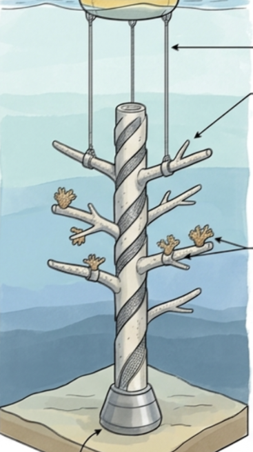

Interactive Corals
4 corals are dedicated to the testing of the users. They are are 3D printed, using PLA, and interactive : they change color depending on the different life actions and parameters choices from the user.
Representative Corals
6 corals are dedicated to raise awareness about the state of health of some main reefs of the world to show the real world's state and the urgency to act.
Cable Management
The different LEDs inside of the corals are linked to the electronical stuff with some welded cables that cross the structure and connect all the branches to each other.
Base
The base has 2 main missions : it helps the structure to stand up and welcomes all the electonical stuff so that it is available, hidden and aesthetic.
Fabrication
The core structure is made out of PVC pieces such as connecting tubes and saddles on which we applied cement to give the impression of havinf an organic structure.
Decorations
We added some thematic decorations to the structure to immerse the user into the underwater world while interracting with it. They are mainly made out of clay that has been painted to develop the artistic side of the project.